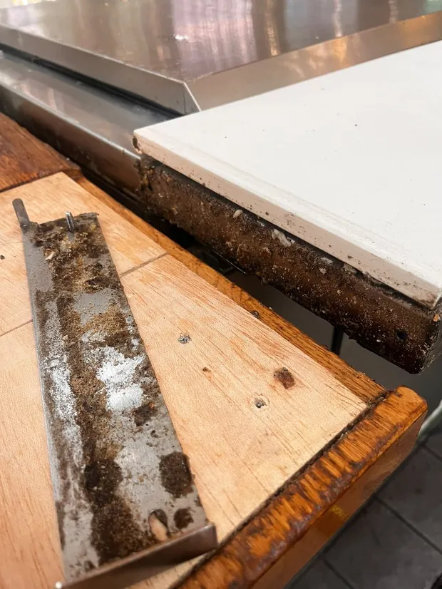

Nettoyage de vitres à l'eau osmosée, sans trace
Fenêtres, baies vitrées, vérandas et vitrines nettoyées à l'eau osmosée : sans minéraux, l'eau sèche sans rien déposer.
Nettoyage de vitres à Paris
Les traces sur une vitre viennent presque toujours de trois choses : l'eau du robinet, très calcaire en Île-de-France, qui dépose un voile blanc en séchant ; les produits ménagers, dont les tensioactifs laissent un film qui resalit vite ; et le plein soleil, qui fait sécher l'eau avant qu'on ait pu la racler.
L'eau osmosée règle le problème à la source. Débarrassée de ses minéraux, elle sèche sans rien déposer : aucun produit n'est nécessaire, donc aucun film résiduel. C'est la méthode que nous employons sur les grandes surfaces, les vérandas et les vitrines.

Ce que nous nettoyons
- Fenêtres, ouvrants et dormants, intérieur et extérieur
- Baies vitrées et grandes surfaces sans reprise de trace
- Vérandas et verrières, y compris en toiture
- Vitrines de commerce, en passage ponctuel ou régulier
- Encadrements, rails et appuis dégraissés
Tarif : sur devis. Cette prestation se chiffre au cas par cas : nous établissons un devis gratuit et ferme après échange. Les frais de déplacement (5 € par tranche de 5 km depuis notre atelier de Tremblay-en-France (93)) s'ajoutent et vous sont annoncés avant validation.
Nous venons entièrement équipés — machines, produits, eau et électricité. Vous n'avez ni prise ni point d'eau à fournir.
Comment nous procédons
Repérage
Nombre d'ouvrants, hauteur, accessibilité : ces trois points déterminent le matériel et le devis.
Dégraissage
Encadrements, rails et appuis d'abord — nettoyer la vitre avant le cadre revient à la resalir aussitôt.
Eau osmosée
Brossage et rinçage à l'eau pure, sans détergent, y compris sur perche télescopique en hauteur.
Contrôle en lumière rasante
Le seul contrôle fiable : on regarde la vitre de biais, à contre-jour, pour vérifier qu'aucun voile ne subsiste.
Nettoyage de vitres : vos questions
Qu'est-ce que l'eau osmosée ?
De l'eau filtrée par osmose inverse, débarrassée de son calcaire et de ses minéraux. En séchant, elle ne dépose rien : c'est ce qui permet de se passer de produit et d'obtenir une vitre sans trace.
Intervenez-vous en hauteur ?
Oui, à la perche télescopique jusqu'à plusieurs étages. Au-delà, ou en cas d'accès difficile, nous vous le disons franchement lors du devis.
À quelle fréquence pour une vitrine de commerce ?
Un passage hebdomadaire ou bimensuel selon l'exposition à la rue. Nous établissons un forfait pour les passages réguliers.
Nettoyage de vitres partout en Île-de-France
Paris (75) · Hauts-de-Seine (92) · Seine-Saint-Denis (93) · Val-de-Marne (94) · Essonne (91) · Yvelines (78) · Seine-et-Marne (77) · Val-d'Oise (95)
Besoin de cette prestation ?
Devis gratuit et sans engagement, réponse sous 24 h. Aucun acompte : vous réglez après l'intervention.
Nos autres prestations
 dès 40 €
dès 40 €
Nettoyage automobile
Detailing intérieur et extérieur à domicile. Aspiration, shampoing des sièges, vapeur haute température, plastiques et vitres — votre voiture retrouve son aspect showroom.
Découvrir la prestation dès 15 €
dès 15 €
Nettoyage textile (canapé, matelas, tapis)
Canapé, matelas, tapis, fauteuil et moquette : injection-extraction, détachage ciblé et traitement anti-acariens, directement chez vous.
Découvrir la prestation sur devis
sur devis
Nettoyage de bateau
Coque lustrée, pont lavé, sellerie nettoyée et protégée : votre bateau retrouve son éclat, sur la Seine, la Marne comme en mer.
Découvrir la prestation sur devis
sur devis
Nettoyage de terrasse
Terrasses, dalles, pierre et bois : haute pression réglée selon le support, traitement anti-mousse et hydrofuge en finition.
Découvrir la prestation sur devis
sur devis
Nettoyage pour entreprise
Bureaux, commerces, restaurants et locaux d'activité : désinfection, moquettes, sanitaires et vitrerie, en passage ponctuel ou régulier.
Découvrir la prestation
sur devisFin de chantier
Dépoussiérage complet, évacuation des résidus, lavage des vitres et des sols : votre bien est prêt à vivre ou à livrer après travaux.
Découvrir la prestation